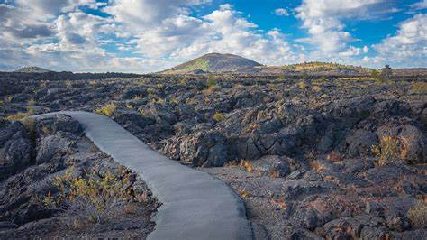
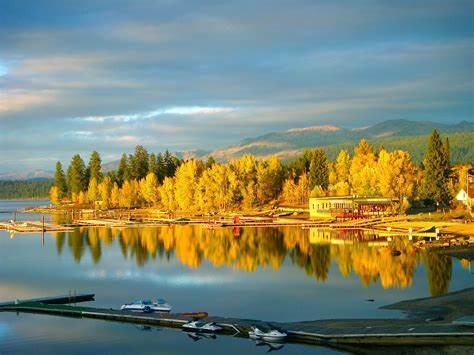
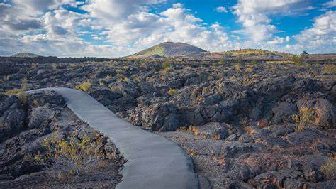
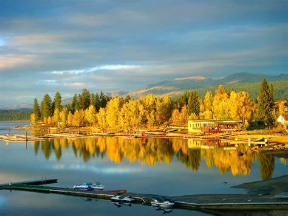

Home page:
Places to visit in Idaho
Idaho
When people think of Idaho, typically the thought that comes to mind is potatoes. While that may be true, Idaho is also home to some very beautiful destinations that are typically overlooked by travelers. Areas such as Couer D'Alene, Craters of the Moon, Mccall and Bear Lake are true hidden gems that travellers to the state of Idaho would truly enjoy. All of these locations offer a wide variety of activities to do throughout all four seasons.
 


